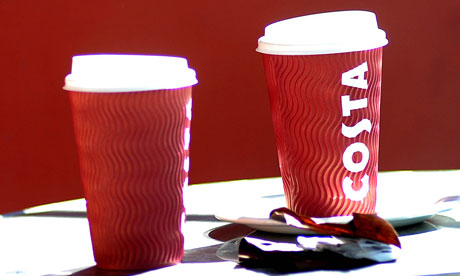

The Cost of Costa Coffee
Does anything symbolise the throwaway culture better than coffee chains? Every one is piled high with by-products of a culture which in the past 10 years has gone from thinking that a cup of coffee is best enjoyed sitting down, in a break from a busy day, to one where if you're not constantly rushing, you may get to work to find your desk gone. Gone are the thick white mugs, washed and reused until they broke. Instead, we've a vast new industry of disposables for coffee on the go.
Costa Coffee alone uses more than 100m disposable coffee cups a year. Add to that Starbucks, Caffe Nero, Pret A Manger and Eat, and you get something approaching 500m paper cups and a billion napkins, plus plastic knives, spoons, sandwich boxes and cute little granola pots to get rid of, just in the UK, every year.
There are no regulations determining what materials they use or how they dispose of any of it. So they do what they like, which turns out to vary wildly. One reason may be that three different government departments are in charge of waste management. The communities secretary is responsible for local rubbish collection via the councils, the environment secretary for waste policy and recycling targets, and the energy and climate change secretary the aspect of, well, tackling climate change. Wrap, the waste-management quango, sits in the middle, saying it has "no current plans" to tackle this.
When I asked the five major chains about their recycling policies, Eat wouldn't give any information. Starbucks said: "We're aiming to make our cups recyclable by 2015." Its salad containers are biodegradable and its sandwich containers, being a sandwich themselves of paper and film, are only recyclable once they're ripped apart. You don't see many people doing that.
Costa's cardboard cups can't be recycled, because although the cardboard is recyclable, the ink and the glue aren't. So it's planning to use vegetable ink and degradable glue on its cups.
But even if everything was recyclable, where are the bins? Pret is the only major chain that offers customer recycling, but then it doesn't give you the choice of a proper cup. Costa is "finalising plans to run trials" of recycling bins.
Caffe Nero does the recycling for its customers. It recycles or recovers everything it clears off the tables, at least in greater London, and about 60% in the rest of the country. Both Pret and Caffe Nero say they're aiming for zero landfill in the next few years.
Of course the real point of a takeaway cup is to take it away, so we need the bins in the street, not in the store. And we probably need half a dozen separate bins, until the ink, the glue, the cling film and the cardboard are standardised. Don't hold your breath.
Although you can hide the cups, ignore them or attempt to leave them behind, you can't really throw them away because there is, as the poster tells us, no "away". Instead, why not do without the paper cup and give yourself a few precious minutes to daydream in a cafe?
This blog was an extract from The Guardians Recycling Blog and is only used as an example for this website. Original Blog by Sheila Hayman, Photograph by Sarah Lee for the Guardian.
 Twitter
Twitter